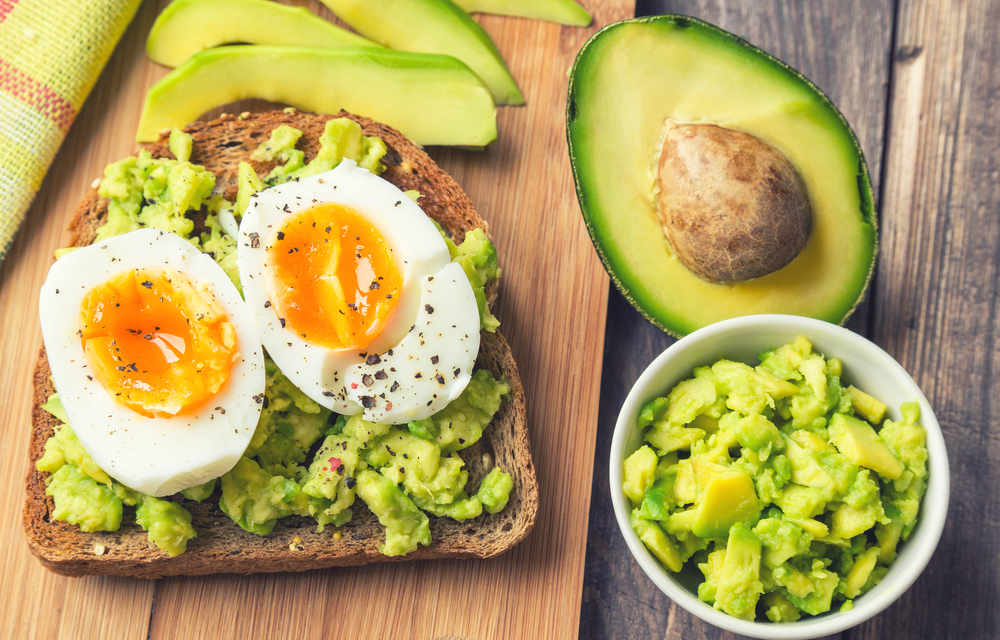
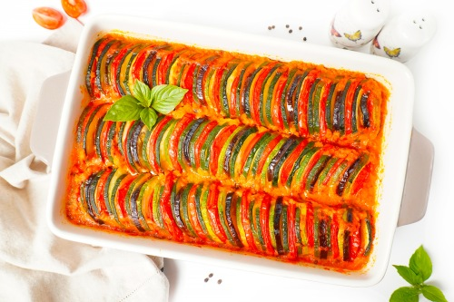

ЗАВТРАК · 10 МИН
Коллекция быстрых рецептов правильного питания для тех, кто хочет заботиться о себе без строгих диет и скучных блюд.
Смотреть рецепты ↓
Мы собираем рецепты из понятных продуктов, которые легко найти в ближайшем магазине. Каждый рецепт содержит время приготовления и примерную пищевую ценность.